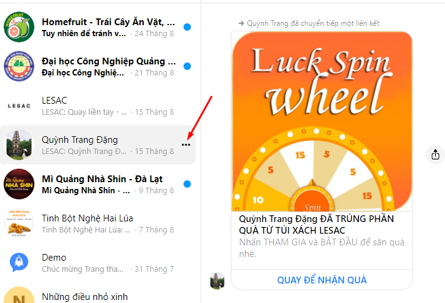
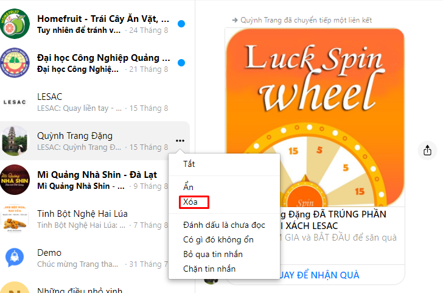
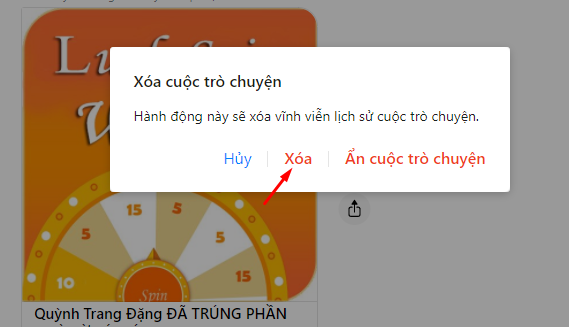
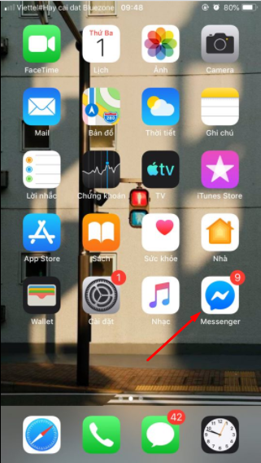
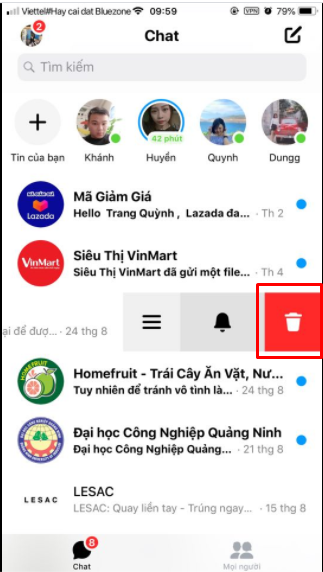
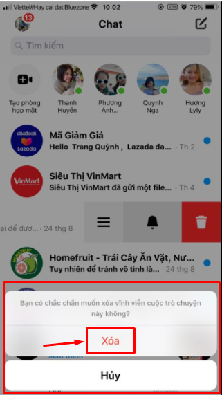
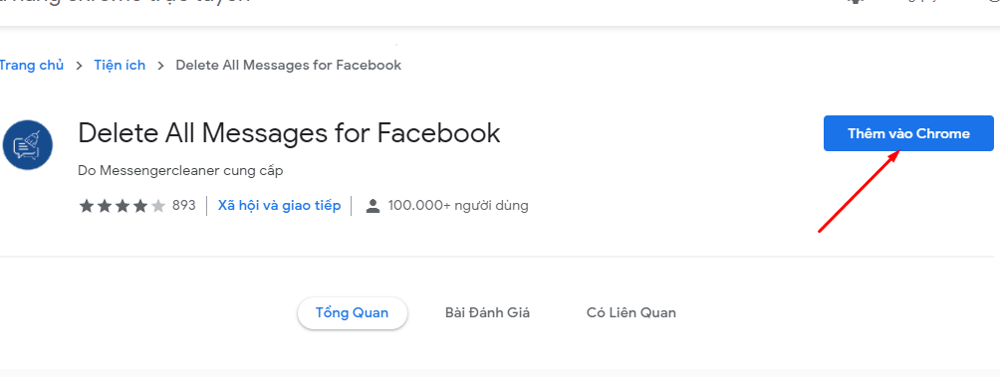
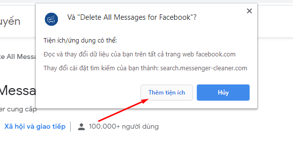
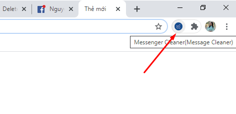

3 Cách xoá tin nhắn trên Facebook Messenger cực đơn giản

Ty Nguyen
CEO ❤️ AhaChat. Love babies & chatbot.
Messenger là ứng dụng tách biệt với Facebook hiển thị tất cả các cuộc trò chuyện của người dùng. Khi sử dụng Messenger, vì một số lý do nào đó mà bạn muốn xoá những cuộc trò chuyện Messenger để tránh người khác có thể đọc được. Thao tác xoá tin nhắn trên Messenger cũng khá đơn giản, tuy nhiên với những người mới dùng Facebook thì không phải là điều dễ dàng. Vì vậy, bài viết dưới đây hướng dẫn bạn cách xoá tin nhắn trên Messenger đơn giản và nhanh gọn, cùng theo dõi nhé!
1. Cách xoá tin nhắn Messenger trên máy tính
Các bước thực hiện xoá tin nhắn Messenger trên PC như sau:
Bước 1: Bạn truy cập vào giao diện Messenger trên máy tính và tìm đến cuộc hội thoại tin nhắn người dùng mà bạn muốn xóa và di chuột vào cuộc hội thoại đó sẽ xuất hiện dấu 3 chấm ngang.

Bước 2: Tại biểu tượng 3 chấm ngang, bạn click chuột vào biểu tượng đó, sẽ xuất hiện cửa sổ. Tại cửa sổ này, bạn chọn Xoá để xoá đoạn chat đó.

Bước 3: Sau khi bạn ấn vào Xóa, Messenger sẽ có thông báo hỏi lại bạn có muốn xóa cuộc trò chuyện này không. Nếu bạn muốn xóa thì bạn click chuột vào Xoá để xoá vĩnh viễn tin nhắn nhé.

Chỉ với 3 bước cơ bản bạn đã xoá thành công tin nhắn trên Messenger, rất đơn giản phải không nào. Bên cạnh xoá tin nhắn Messenger trên máy tính, bạn có thể thực hiện thao tác này ngay trên điện thoại di động của bạn cũng rất đơn giản và nhanh chóng, hãy theo dõi tiếp bài viết để thực hiện nhé!
2. Cách xoá tin nhắn Messenger trên điện thoại di động
Ngoài cách xoá tin nhắn Messenger trên máy tính, bạn cũng có thể xoá tin nhắn ngay trên ứng dụng Messenger trên điện thoại của bạn. Cách thực hiện như sau:
Bước 1: Bạn mở ứng dụng Messenger trên điện thoại di động của bạn.

Bước 2: Khi truy cập vào ứng dụng, giao diện các tin nhắn của bạn xuất hiện, tại cuộc hội thoại tin nhắn với người dùng bạn muốn xóa, bạn vuốt từ bên phải sang bên trái, xuất hiện biểu tượng thùng rác có nền màu đỏ, như hình dưới.

Bước 3: sau khi bạn ấn vào biểu tượng thùng rác có nền màu đỏ, hiển thị ra giao diện popup, bạn ấn Xóa là xong.

Như vậy là bạn đã xoá tin nhắn Messenger trên ứng dụng điện thoại thành công rồi nhé.
3. Cách xoá nhiều tin nhắn trên Messenger cùng lúc
Để có thể xoá tin nhắn trên Messenger cùng lúc, bạn cần thực hiện thao tác này thông qua tiện ích ứng dụng Messenger Cleaner.
Bước 1: Bạn tải tiện ích mở rộng Messenger Cleaner và sau đó nhấn Thêm vào Chrome để cài đặt vào trình duyệt Chrome của bạn.

Bước 2: Sau khi ấn Thêm vào Chrome, xuất hiện thông báo, bạn bấm chọn Thêm tiện ích và chờ một lát để quá trình cài đặt được diễn ra thành công nhé.

Bước 3: Khi Messenger Cleaner được tải thành công, bạn nhìn vào góc trái phía trên màn hình, cuối thanh địa chỉ trình duyệt có biểu tượng hình chiếc chổi quét trên biểu tượng tin nhắn màu xanh dương, bạn click chuột vào đó

Bước 4: Bạn đăng nhập vào giao diện Messenger trên máy tính sau đó click vào biểu tượng Messenger Cleaner sẽ thấy xuất hiện thông báo có 2 lựa chọn:
- Delete All Messenger: Xoá toàn bộ tin nhắn. Nếu bạn muốn xoá toàn bộ tin nhắn, bạn bấm chọn Delete All Messenger, ngay lập tức toàn bộ tin nhắn trong Messenger của bạn được xoá hết. Tuỳ thuộc vào số lượng tin nhắn mà quá trình diễn ra nhanh hay chậm.
- Choose & Delete: Lựa chọn và xoá tin nhắn. Khi bạn tích chọn vào Choose & Delete thì chỉ xoá những tin nhắn mà bạn tích chọn và muốn xoá chúng.
Chỉ với vài thao tác cơ bản đơn giản mà bạn đã xoá toàn bộ tin nhắn trên Messenger. Với cách này giúp người dùng Facebook tiết kiệm được thời gian và công sức.
Trên đây là hướng dẫn cách xoá tin nhắn trên Messenger nhanh chóng mà bạn có thể thực hiện dễ dàng. Nếu có thắc mắc gì cần hỗ trợ thì đừng quên để lại câu hỏi ngay mục bình luận dưới đây, chúng tôi sẽ phản hồi bạn trong thời gian sớm nhất nhé. Hy vọng bài viết có ích với bạn. Chúc bạn thực hiện thành công!